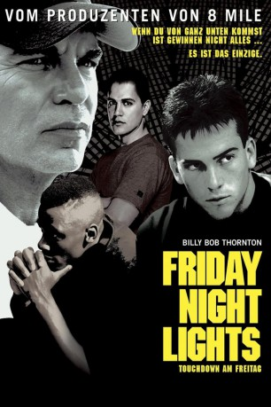

#3370 Friday Night Lights - Touchdown am Freitag
Alternativ: Friday Night Lights
 
 IMDB-Wertung: 7.3 / 10
IMDB-Wertung: 7.3 / 10  Metascore: 70
Metascore: 70 
1988: In der Kleinstadt Odessa, Texas, kreist das Leben nur um Football. Auf Coach Gaines lastet der ungeheure Erwartungsdruck, in seinem dritten Jahr das Team zurück zu alten Erfolgen und dem Gewinn der State Championship zu führen. Mit dem Supertalent Bobbie Miles, außerhalb des Feldes ein arroganter Maulheld, beginnt zunächst eine traumhafte Siegesserie. Als Bobby sich am Knie verletzt und seine Karriere beenden muss, können seine Kameraden den Verlust an Spielstärke nicht kompensieren.
Jahr: 2004
Dauer: 117 Minuten
FSK: 12
Land: USA Studio: Universal PicturesTonspuren: DD5.1 - ,
Untertitel:
Auflösung: 1080p (1920x816) Größe: 7598 MB
Genre: Action, Drama, Sport
Regisseur:  Peter Berg
Peter Berg
Drehbuch: Buzz Bissinger, David Aaron Cohen, Peter Berg
Soundtrack: Explosions in the Sky, Brian Reitzell, David Torn
Darsteller:
 Billy Bob Thornton als Coach Gary Gaines
Billy Bob Thornton als Coach Gary Gaines Lucas Black als Mike Winchell
Lucas Black als Mike Winchell Garrett Hedlund als Don Billingsley
Garrett Hedlund als Don Billingsley Derek Luke als Boobie Miles
Derek Luke als Boobie Miles Jay Hernandez als Brian Chavez
Jay Hernandez als Brian Chavez- Lee Jackson als Ivory Christian
- Lee Thompson Young als Chris Comer
 Tim McGraw als Charles Billingsley
Tim McGraw als Charles Billingsley- Grover Coulson als L.V. Miles
 Connie Britton als Sharon Gaines
Connie Britton als Sharon Gaines- Connie Cooper als Mrs. Winchell
- Ryanne Duzich als Melissa
 Amber Heard als Maria
Amber Heard als Maria- Morgan Farris als Jennifer Gaines
- Laine Kelly als Comer's Girlfriend
 Gavin Grazer als Trapper
Gavin Grazer als Trapper- Turk Pipkin als Skip Baldwin
- Tommy G. Kendrick als Odessa Doctor
 Brad Leland als John Aubrey
Brad Leland als John Aubrey Christian Kane als Brian
Christian Kane als Brian- Buddy Hale als Booster
- Ken Farmer als Booster
 Marco Perella als Booster
Marco Perella als Booster Eloise DeJoria als Booster
Eloise DeJoria als Booster- Katherine Willis als Booster Wife
- Angie Bolling als Booster Wife
- J.D. Hawkins als Carter Play-By-Play Announcer
- Bob Thomas als Slammin' Sammy
- Paul Wright als Coach Belew
 Julius Tennon als Coach James
Julius Tennon als Coach James- Dennis Hill als Coach Harper
- Timothy Walter als Coach Vonner
 Josh Berry als Coach Campbell
Josh Berry als Coach Campbell- John Hayden als Permian Booth Coach
- Tiki Davis als Carter Co-Captain Baird
- Kevin Page als John Wilkins
 Brady Coleman als Jerald McClary
Brady Coleman als Jerald McClary Stephen Bishop als Loie Harris
Stephen Bishop als Loie Harris- Aisha Schliessler als Cheerleader
- Brian Thornton als Recruiter
- Sam Austin als Recruiter
 Terry Dale Parks als Skip Baldwin's Cameraman
Terry Dale Parks als Skip Baldwin's Cameraman- Dean Baldwin als Football Player
- Robert Van als Football Player
- Travis Thompson als Football Player
- Lance Aaron als Backup Quaterback #11 , uncredited
- Leila Almas als Buddy's Burgers Chick , uncredited
- Crystal Brown-Tatum als Sideline Journalist , uncredited
- Dan Burkarth als WalMart Buyer , uncredited
- Joseph T. Campos als Football Player , uncredited
Datei: X:\2004(A-F)\Friday Night Lights - Touchdown am Freitag (2004, FSK12, 1920x816).mkv seit 26.03.2016
Festplatte: HD 2003-2004-2005(A-F)
 Es gibt insgesamt 39 Filme in der Gruppe '2004(A-F)'
Es gibt insgesamt 39 Filme in der Gruppe '2004(A-F)'